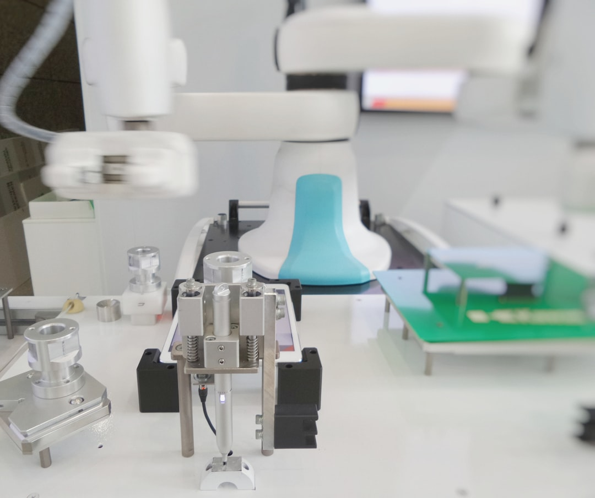

인도·TSMC 반도체 공세, 韓 소재 포지션 흔든다

인도 정부는 2025년 타타일렉트로닉스·PSMC(파워칩반도체) 합작 파브를 구자라트주에 착공했으며, TSMC는 인도 내 패키징 거점 구축을 타진 중이다. 엔비디아는 2025년 4월 인도에 5억 달러 규모 AI 인프라 투자를 발표했고, 젠슨 황 CEO가 직접 뉴델리를 방문해 나렌드라 모디 총리와 회담했다.
TSMC의 지역 다변화는 애리조나(2nm, 400억 달러 투자), 일본 구마모토(2공장, 12nm, 2027년 가동), 독일 드레스덴(2027년 착공) 순으로 확장 중이다. 인도가 이 라인업에 추가되면 글로벌 첨단 반도체 공급망에서 한국의 '허브' 포지션이 상대적으로 약화될 수 있다.
한국은 현재 삼성전자 파운드리(GAA 3nm 양산)·SK하이닉스(HBM3E)·DB하이텍(아날로그 8인치)의 3축 구조로 반도체 공급망을 받치고 있다. 그러나 미중 수출통제 교차 압박에 더해 인도·일본의 신규 팹 건설이 맞물리며 삼성전자 파운드리의 수주 경쟁 환경이 2026년부터 본격적으로 복잡해질 전망이다.
소재 측면에서 인도 신규 팹은 초기 운영에 필요한 특수가스·CMP 슬러리·포토레지스트 등을 외부 조달에 의존할 수밖에 없다. 한국 소재 기업(솔브레인·동진쎄미켐·SK머티리얼즈 등)에게는 인도 신규 팹 공급사 등록이 새로운 수출 기회로 열릴 수 있다.
TSMC·인도 반도체 연대가 강화될수록 글로벌 팹 입지 지도는 '한국+대만 쌍축'에서 '미국·일본·인도·유럽 분산 다축'으로 이동한다. 이는 삼성전자 파운드리에 수주 압박이지만, 역설적으로 한국 소재 기업에는 공급처가 늘어나는 기회다. 단, 인도 팹에 공급사로 등록하려면 2025년 내 영업망 선점이 필수다.
미중 기술패권 전쟁에서 한국이 '전략적 균형자' 역할을 자임하는 동안, 실제 공급망 주도권은 인도·일본·EU로 분산 이동 중이다. 2026년 이후 미국의 첨단 반도체 수출 허가제가 현실화되면 한국 팹의 대중 수출은 추가 제약을 받고, 인도·동남아 신흥 팹이 반사이익을 얻는 구조가 고착화될 수 있다.
한국 반도체 소재 기업(솔브레인·동진쎄미켐·SK머티리얼즈·이엔에프테크놀로지 등): 인도·일본 신규 팹 공급사 등록 시 기존 삼성·TSMC향 단일 매출 구조를 다변화할 수 있다. 구마모토 TSMC 2공장(2027년 가동) 단독으로도 연간 수천억 원 규모의 소재 신규 수요가 발생한다.
인도 현지 파트너십 선점 기업: 타타·마힌드라 등 인도 대기업과 소재 공급 MOU를 먼저 체결한 한국 기업이 5~10년 장기 공급 계약에서 유리한 위치를 선점한다. 인도 반도체 생태계가 성숙하는 2028~2030년 구간이 핵심 수확 시점이다.
삼성전자 파운드리: TSMC의 다지역 확장과 인도 신규 팹 등장으로 글로벌 팹 시장 내 경쟁 강도가 높아진다. 현재 삼성 파운드리의 시장 점유율은 약 12~13%(TSMC 61% 대비)로, 추가 고객 이탈 시 규모의 경제 유지가 어려워진다.
중국산 소재에 여전히 의존하는 중소 반도체 소재 기업: 인도·일본 신규 팹이 TSMC 인증 공급망 시스템을 그대로 채택할 경우, TSMC 승인을 받지 못한 국내 중소 소재사는 신규 수요에서 자동 배제된다. TSMC 공급사 인증(Qualified Vendor List)이 없으면 이 기회는 그림의 떡이다.
한국 소재 기업은 지금 당장 TSMC 구마모토 2공장·인도 타타 팹 공급사 등록 절차를 시작해야 한다. TSMC QVL 인증은 최소 18~24개월이 소요되므로 2027년 가동 시점에 맞추려면 2025년 상반기 내 신청이 마감 시한이다.
산업 전략가라면 인도 반도체 생태계를 단순 경쟁 위협이 아닌 '소재 수출 확장 플랫폼'으로 재정의할 필요가 있다. 정부 소부장 1700억 원 예산의 일부를 인도 시장 인증·현지 법인 설립 지원에 배분하는 것이 중장기 수익 면에서 국내 설비 보조보다 레버리지가 크다.
실제 조달 현장에서는 — 인도 팹에 소재를 처음 납품할 때 가장 큰 장벽은 '인증'이 아니라 '물류'다. 인도 세관의 화학물질 수입 규정이 국가마다 달라 통관 지연이 일상적이다. 내가 동남아 팹에 소재를 공급할 때도 같은 문제를 겪었다. 현지 통관 대행사와 독성물질 취급 인허가를 사전에 확보하지 않으면, 인증을 다 받아도 납품 첫 날 창고에서 발이 묶인다.
이 포스팅은 쿠팡 파트너스 활동의 일환으로 수수료를 제공받습니다.